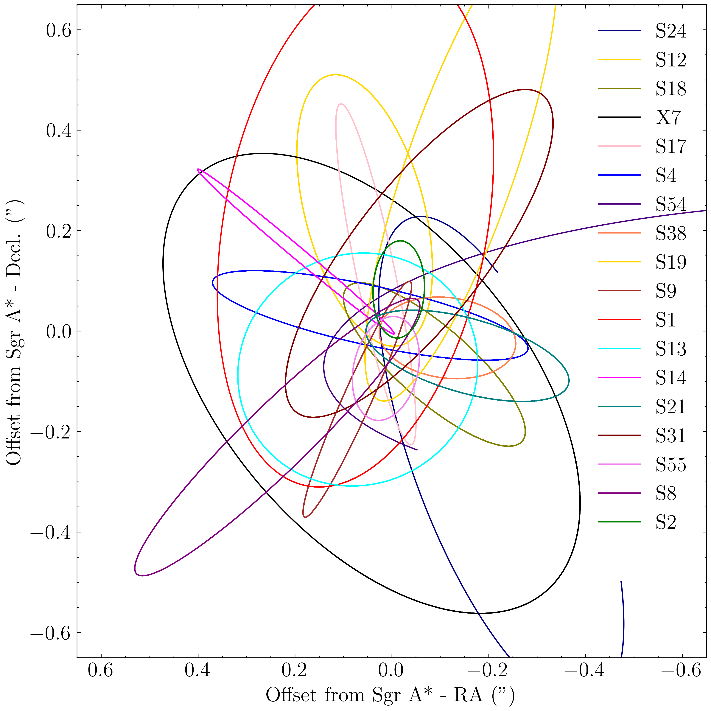

Intro

I am Wasif Shaqil, a M.Sc. in Physics (Astronomy & Astrophysics) at the University of Hamburg.
I am currently working on my master thesis on the topic of "Tidal Interaction in the Galactic Center: The Case of X7".
I am interested in Galactic Center astrophysics, especially on the young stars that inhabit the region
and the mysterious gas clouds that have been discovered over the last decades.
I am also interested in the gas dynamics of the region
and tests of General Relativity in the gravitational field of the supermassive black hole, Sagittarius A*.
Research

My research interests are in the field of Galactic Center astrophysics.
I am currently working on my master thesis on the topic of "Tidal Interaction in the Galactic Center: The Case of X7".
My thesis is supervised by Prof. Dr. Stephan Rosswog (University of Hamburg) and Dr. Diego Calderón (Max Planck Institute for Astrophysics).
We are investigating the tidal interaction of X7 with the supermassive black hole, Sagittarius A*.
Observations over the last few decades have
revealed the presence of several enigmatic features like X7 in the Galactic Center.
X7 is unique because observations show that it is elongating due to the tidal forces of the black hole.
It is projected to be tidally disrupted during its pericenter passage in 2036 which provides a unique opportunity to understand the physics of the accretion flow around the black hole.
My thesis involves numerical simulations, theoretical analysis and comparison with observations, to find out the origin of the gas cloud X7.
I am also collaborating on a paper with the UCLA Galactic Center group (Prof. Dr. Andrea Ghez) on the same topic.
CV
Contact